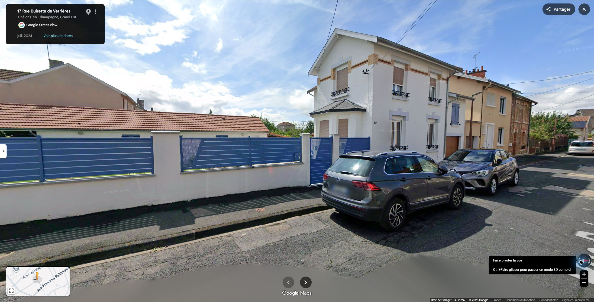
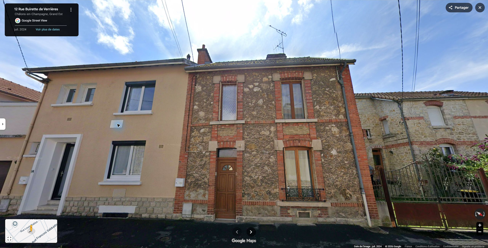
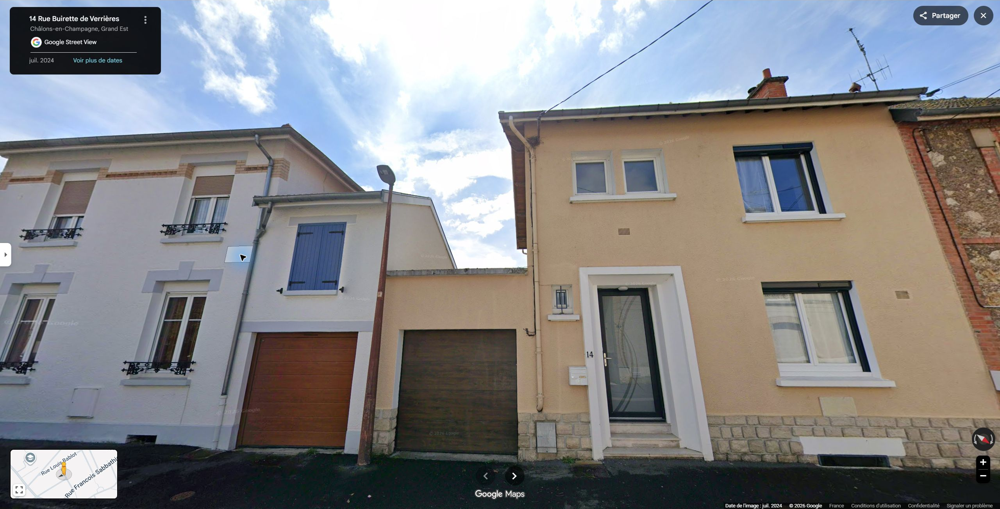
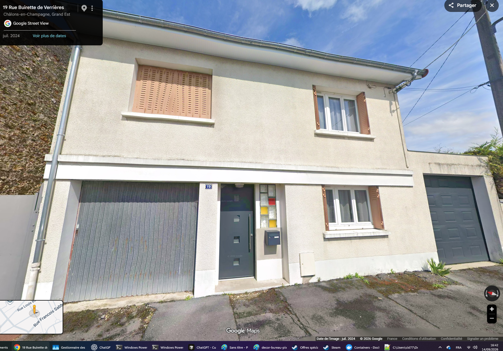
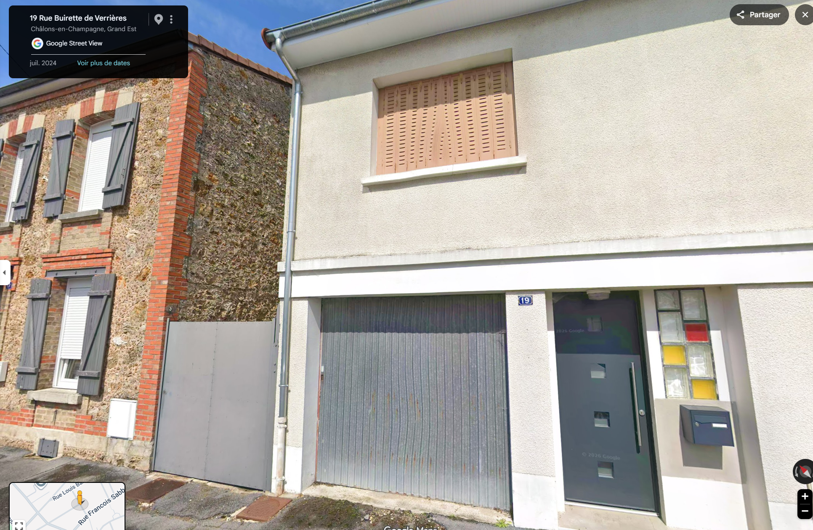
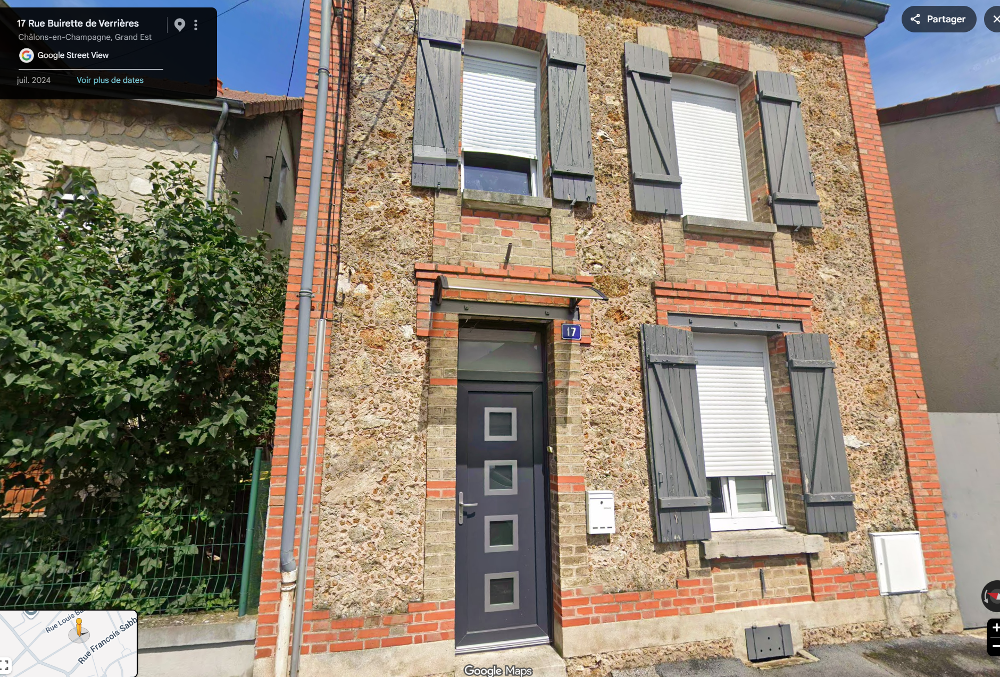
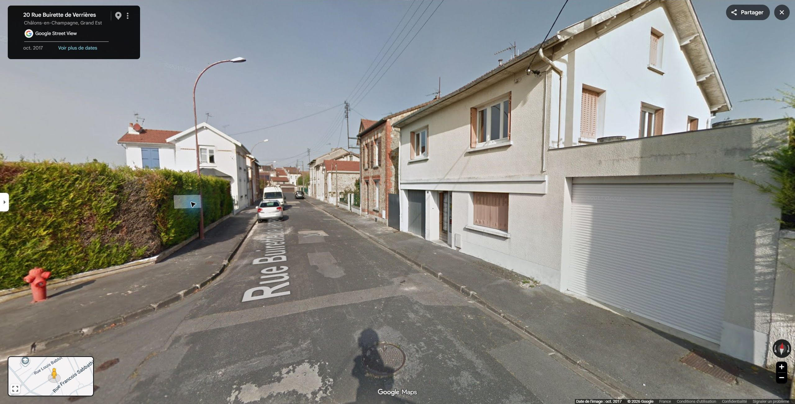
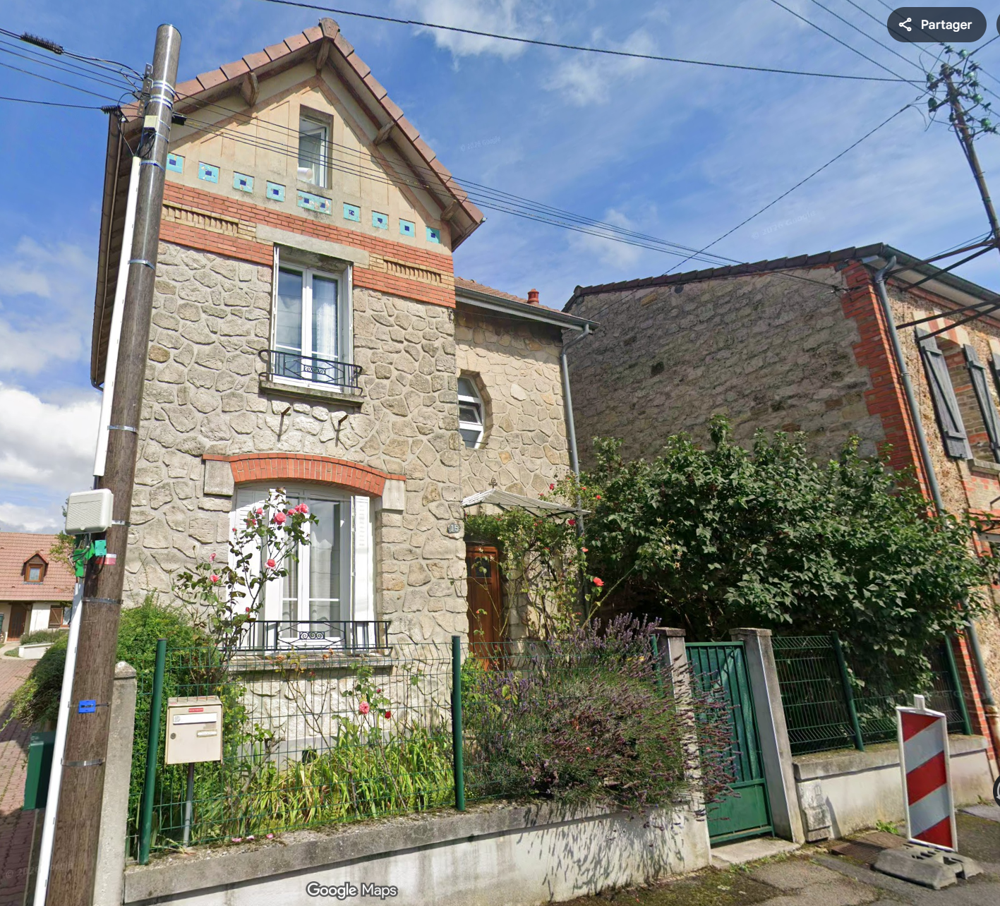
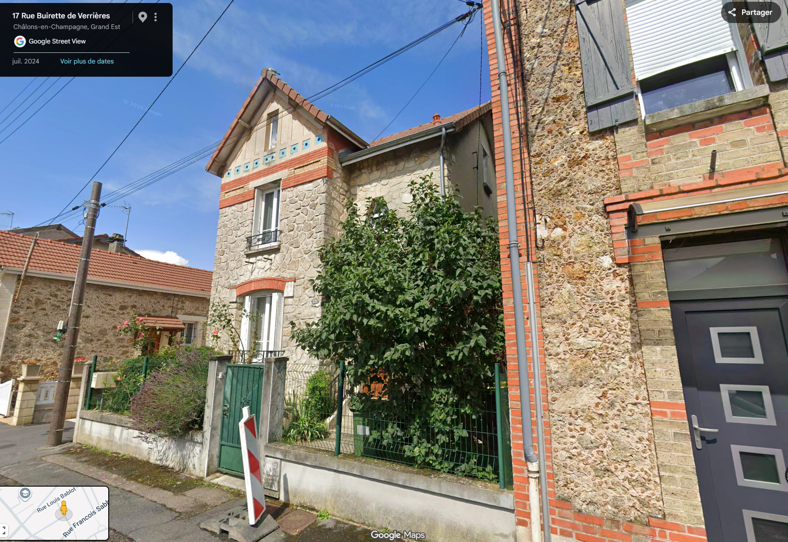

Secteur 18–20 · clôture et bâtiment bas

Côté pair près du carrefour : clôture bleue, dépendance et maison blanche, vus du point Google 19.
Caméra : 48.9611796, 4.376036 · azimut 270°
Ouvrir le panorama source ↗Retour au jeu · Façades de juillet 2024 et une vue oblique de contexte d’octobre 2017, Google Street View. Dimensions du modèle estimées. Les adresses 18 et 20 restent incertaines.
Côté pair près du carrefour : clôture bleue, dépendance et maison blanche, vus du point Google 19.
Caméra : 48.9611796, 4.376036 · azimut 270°
Ouvrir le panorama source ↗
Façade blanche à bandeaux de brique claire, avancée polygonale, clôture bleue et dépendance. Voitures devant le soubassement.
Caméra : 48.9612606, 4.3759704 · azimut 270°
Ouvrir le panorama source ↗
Numéro 16 lisible sur la façade blanche ; numéro 14 près de la porte à encadrement blanc de la maison beige. Garages et raccords visibles.
Caméra : 48.9613392, 4.3759011 · azimut 270°
Ouvrir le panorama source ↗
14 beige, numéro net près de la porte, garage brun et soubassement. 12 en pierre et briques à droite.
Caméra : 48.9614199, 4.3758278 · azimut 270°
Ouvrir le panorama source ↗
Vue élargie : 14, 12 et raccord du garage voisin ; trottoir et bordures.
Caméra : 48.9614199, 4.3758278 · azimut 270°
Ouvrir le panorama source ↗
Numéro 12 lisible. Porte, encadrements de brique, panneaux de pierre, ferronneries et retour vers le jardin. Toiture hors cadre en partie.
Caméra : 48.9615006, 4.3757576 · azimut 270°
Ouvrir le panorama source ↗
Façade complète du 12, deux niveaux, corniche, toiture et cheminées ; 14 à gauche. Vue inclinée vers le haut.
Caméra : 48.9615006, 4.3757576 · azimut 235°
Ouvrir le panorama source ↗
16 confirmé par numéro visible. Deux niveaux, quatre baies, frise, corniche et garage accolé ; pied masqué par véhicules.
Caméra : 48.9613392, 4.3759011 · azimut 235°
Ouvrir le panorama source ↗
Carrefour avec la rue Lamairesse, clôture bleue, bâtiment bas et volumes voisins. Contexte des repères approximatifs 18–20, sans numéro de façade vérifié.
Caméra : 48.9611796, 4.376036 · azimut 235°
Ouvrir le panorama source ↗
Numéro 14 lisible, façade beige complète, corniche et cheminée, garage et raccord avec le 16. Vue vers le haut, lignes de perspective convergentes.
Caméra : 48.9614199, 4.3758278 · azimut 235°
Ouvrir le panorama source ↗
Cliché fourni par l’utilisateur. Numéro confirmé par la plaque visible. La position du panorama n’est pas jointe ; placement du modèle sur les emprises OSM existantes.

Cliché fourni par l’utilisateur. Numéro confirmé par la plaque visible. La position du panorama n’est pas jointe ; placement du modèle sur les emprises OSM existantes.

Cliché fourni par l’utilisateur. Numéro confirmé par la plaque visible. La position du panorama n’est pas jointe ; placement du modèle sur les emprises OSM existantes.

Vue ancienne utilisée uniquement pour la forme du pignon et les ouvertures latérales visibles. La façade sur rue suit les clichés de juillet 2024.
Caméra : 48.9610917, 4.3760788 · azimut 354.92°
Ouvrir le panorama source ↗
Cliché fourni par l’utilisateur. Le numéro 15 est visible sur la façade ; la vue oblique datée de juillet 2024 confirme sa position à gauche du 17. Emprise OSM du projet, hauteurs estimées et faces cachées simplifiées.

Cliché fourni par l’utilisateur. Le numéro 15 est visible sur la façade ; la vue oblique datée de juillet 2024 confirme sa position à gauche du 17. Emprise OSM du projet, hauteurs estimées et faces cachées simplifiées.